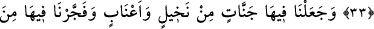
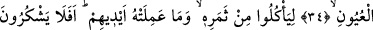
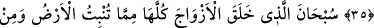
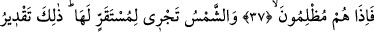
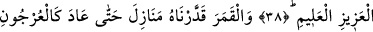
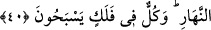

HER BİRİ
BİR YÖRÜNGEDE
YÜZERLER
33. (Bu hususta) ölü toprak onlar için mühim bir delildir. Biz ona yağmurla hayat
verdik ve ondan dane çıkardık. İşte onlar bundan yerler.
34. Biz, yeryüzünde nice nice hurma bahçeleri, üzüm bağları yarattık ve oralarda
birçok pınarlar fışkırttık.
35. Tâ ki, onların meyvelerinden ve elleriyle bunlardan imal ettiklerinden
yesinler. Hâlâ şükretmeyecekler mi?
36. Yerin bitirdiklerinden, insanların kendilerinden ve henüz mahiyetini
bilmedikleri şeylerden bütün çiftleri yaratan Allah’ı tesbih ve takdis ederim.
37. Gece de onlar için bir ibret alâmetidir. Biz ondan gündüzü sıyırıp çekeriz de
onlar karanlıklara gömülürler.
38. Güneş de kendisi için belirlenen yerde akar (döner). İşte bu, azîz ve alîm olan
Allah’ın takdiridir.
39. Ay için de birtakım menziller (yörüngeler) tayin ettik. Nihayet o, eğri hurma
dalı gibi (hilâl) olur da geri döner.
40. Ne güneş aya yetişebilir, ne de gece gündüzü geçebilir. Her biri bir yörüngede
yüzerler.
“Ölü” kuru ve katılaşmış “toprak onlar” Mekkeliler “için mühim bir delildir.”